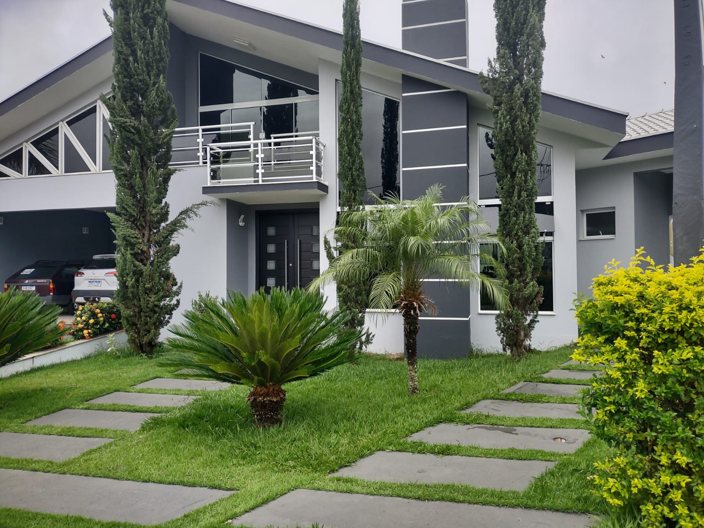
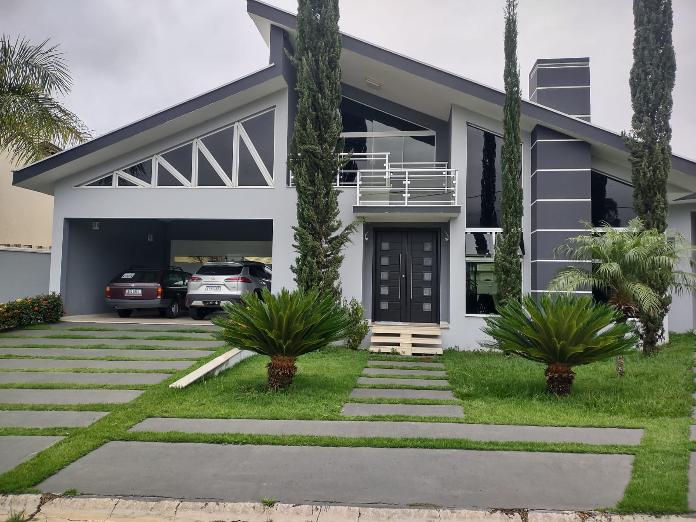
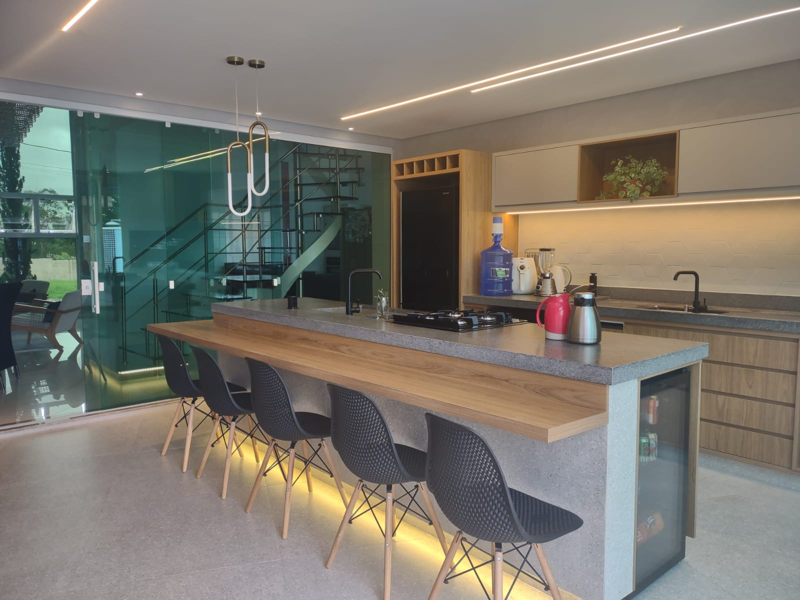
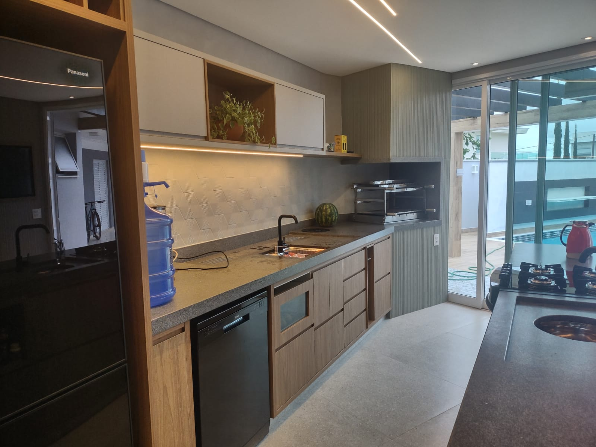
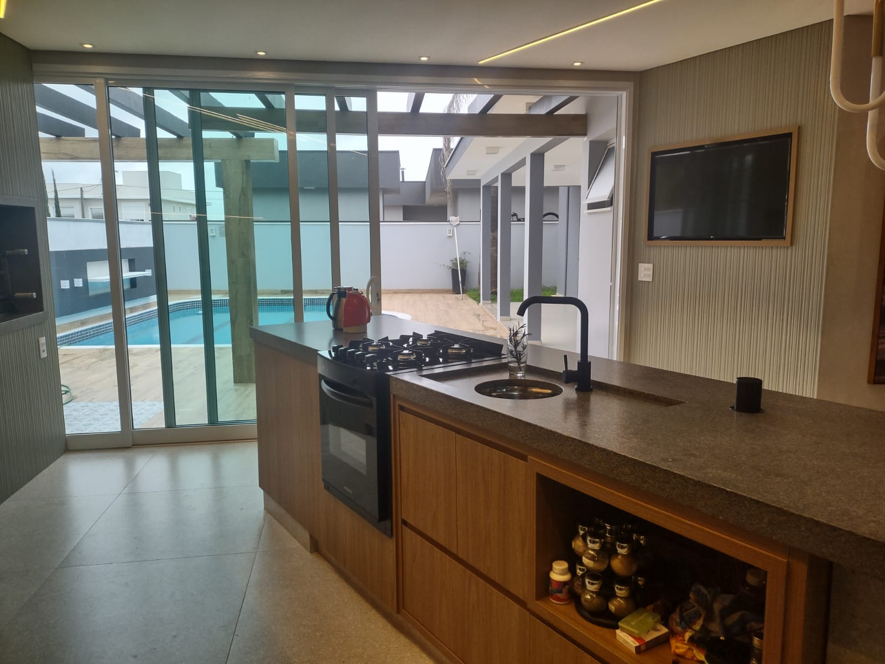
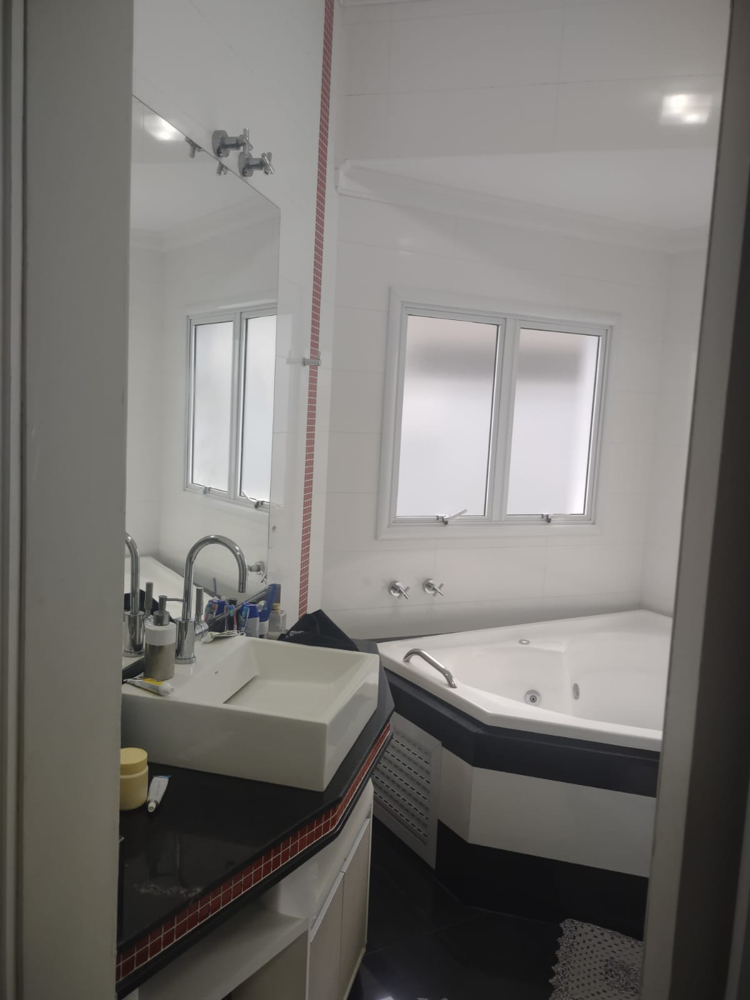
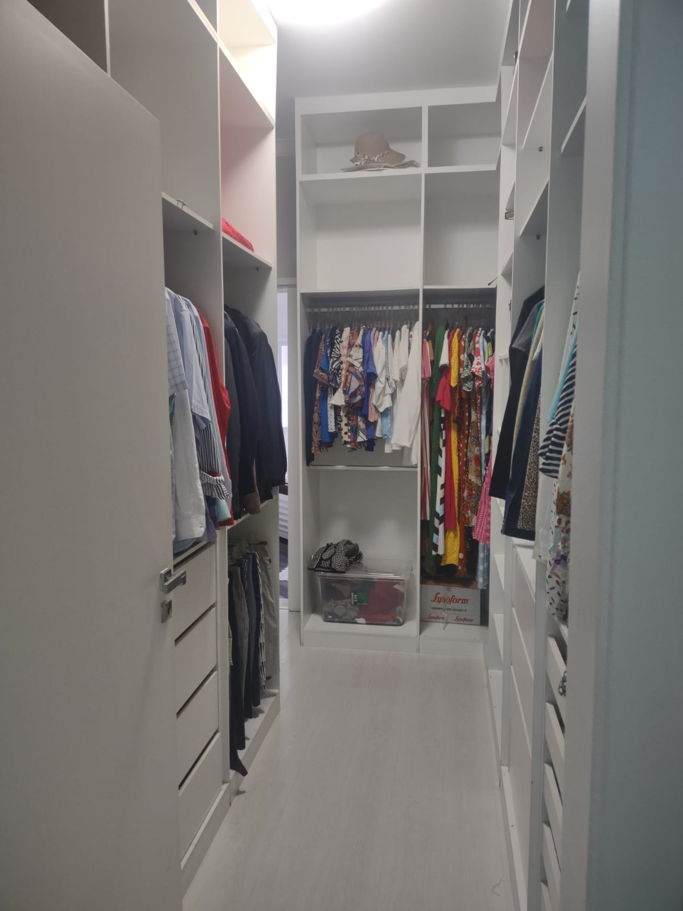
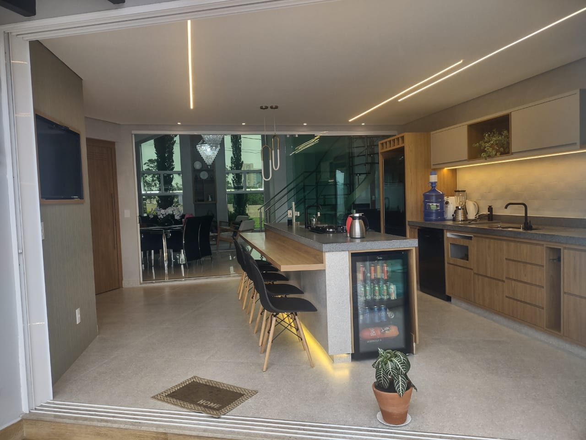
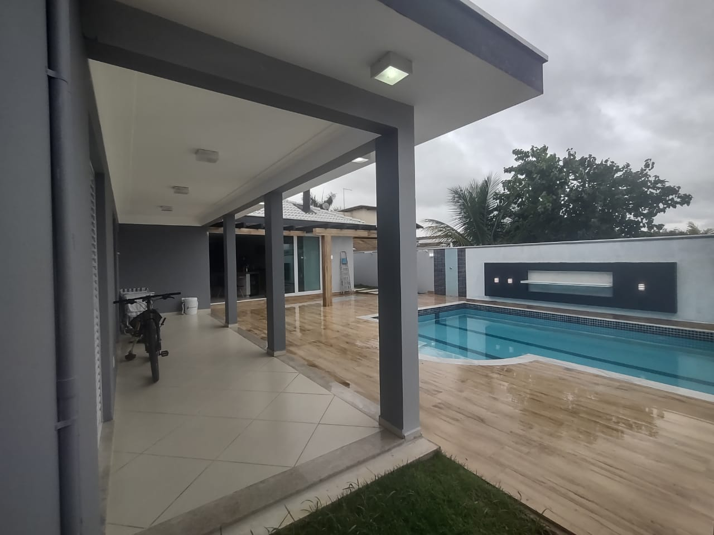

Um sonho que virou realidade — e agora pode ser seu!
Essa casa não foi apenas construída, ela foi idealizada com amor e realizada com dedicação. Inspirado por um projeto encontrado em uma revista de arquitetura, o proprietário se encantou com cada detalhe e decidiu torná-lo realidade, tijolo por tijolo. O lar acolheu momentos inesquecíveis com seus três filhos e foi palco de muitas memórias felizes.
Hoje, com os filhos seguindo seus caminhos, o casal sente que a casa ficou grande demais para dois. Por isso, com o coração cheio de gratidão, decidiram dar a oportunidade para que uma nova família viva essa experiência única. Você pode ser o próximo capítulo dessa linda história.
Composição da Casa
Espaço, conforto e elegância em cada ambiente:
4 suítes espaçosas
Escritório para home office
Sala de jantar e sala de TV
2 cozinhas funcionais
Lavabo + banheiro da piscina
Despensa e quartinho de apoio
Garagem coberta para 2 carros, espaço descoberto para mais 2
Terreno: [inserir metragem] | Área construída: [inserir metragem]
Galeria de Fotos









Localização
Qualidade de vida em um dos melhores endereços de Indaiatuba!
Situada no Condomínio Jardim dos Lagos, na Rodovia Lix da Cunha, nº 80, esta casa une tranquilidade, segurança e fácil acesso às principais vias da cidade.
Indaiatuba é reconhecida por sua excelente infraestrutura, qualidade de vida e constante valorização imobiliária — o que torna essa aquisição uma oportunidade rara tanto para morar quanto para investir.
Documentação e Valores
Pronta para você entrar e viver!
Documentação totalmente regularizada
Valor de venda: R$ 2.800.000,00
Corretor: Saulo Henrique dos Santos – CRECI 95047 – (19) 99117-7796
Proprietário: Emilio Aparecido dos Santos – (19) 97402-4920